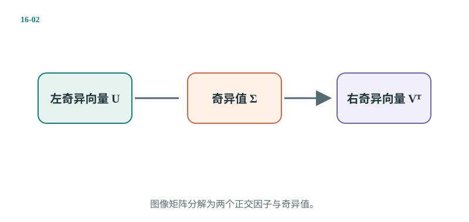
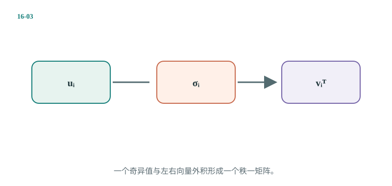
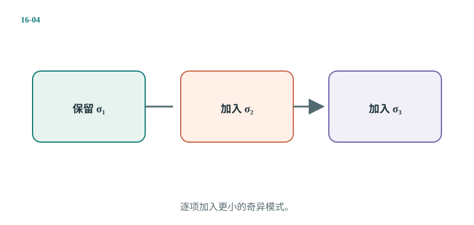
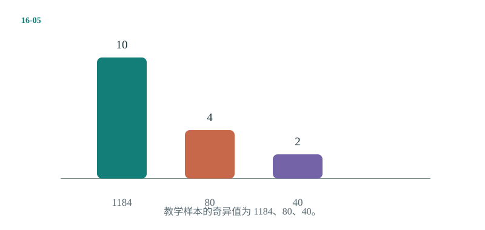
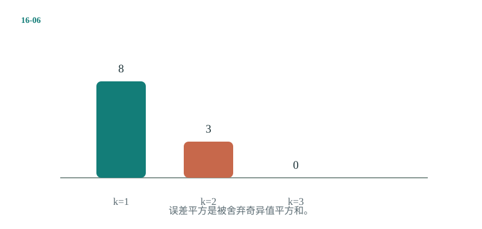
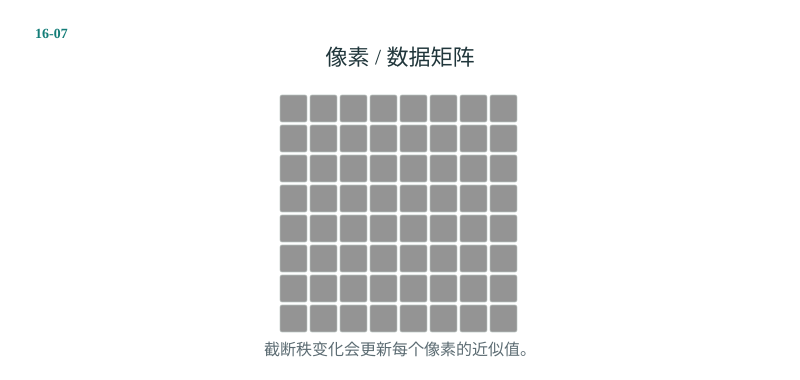
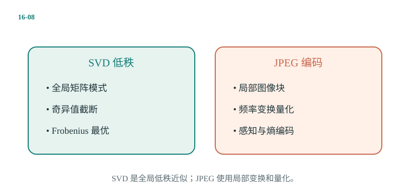

图像压缩：SVD 如何用少量方向重建像素
一张灰度图可以看成一个矩阵。SVD 把它拆成一组由重要到次要的图案；只保留前几个，就能得到低秩近似。
01把图像变成矩阵
一张灰度图有 m 行、n 列，每个像素是一个强度值。把这些值排成矩阵 A，就能用线性代数研究图像结构。RGB 彩图有三个通道，可以分别处理三个矩阵。
矩阵的行列数决定像素位置；数值大小决定亮度。SVD 不知道什么是眼睛、边缘或物体，它只根据矩阵数值寻找最重要的正交模式。
02SVD 把矩阵拆成三块
对任意实矩阵 A，都存在奇异值分解 A=UΣVᵀ。U 与 V 的列是正交单位向量，Σ 的对角线是非负奇异值，通常按从大到小排列。
矩阵不必是方阵，也不必可逆。左右正交因子描述两侧模式，中间的奇异值控制每个模式强度。

03每个奇异值对应一个秩一图案
把矩阵乘积按列展开，A=Σᵢ σᵢ uᵢvᵢᵀ。每一项 uᵢvᵢᵀ 都是秩一矩阵，像一个可分离的二维图案；奇异值 σᵢ 决定该图案的权重。
第一项通常捕捉最强的整体结构，后续项补充更弱的变化。但“奇异值大”不等于“语义最重要”，它只表示对矩阵 Frobenius 能量的贡献大。

04截断 SVD：只留下最大的 k 个模式
定义 Aₖ=Σᵢ₌₁ᵏ σᵢuᵢvᵢᵀ。它的秩至多为 k。Eckart–Young–Mirsky 定理说明：在所有秩不超过 k 的矩阵中，Aₖ 是 Frobenius 范数和谱范数意义下的最佳低秩近似。
这不是随便删除一些像素，而是在全局矩阵误差意义下最优地保留 k 个正交模式。

05奇异值谱告诉我们误差还剩多少
截断后的 Frobenius 误差平方等于被舍弃奇异值的平方和：‖A−Aₖ‖F²=Σᵢ>k σᵢ²。若奇异值下降很快，较小的 k 就能保留大部分矩阵能量。
这个误差是像素矩阵的平方误差，不等同于人类视觉质量。

06压缩率：少存了多少个数
原始 m×n 矩阵需要 mn 个数。秩 k 的 SVD 近似需要存 Uₖ 的 mk 个数、Vₖ 的 nk 个数和 k 个奇异值，总计 k(m+n+1)。只有当这个数量明显小于 mn，存储上才有优势。
例如 8×8 矩阵，k=2 时要存 2(8+8+1)=34 个数，而原矩阵有 64 个数；这里没有计入索引、量化、文件头和浮点编码。

07交互：调节 k，实时重建一张小图
下面的 8×8 灰度图由三个正交 Hadamard 模式构造，奇异值为 1184、80、40，因此矩阵秩为 3。滑块保留前 k 个模式，像素格会更新为对应的截断重建。
k=1 只保留平均亮度模式；k=2 加入第二个结构；k=3 完整恢复。这是确定性的教学样本，不是外部照片。

8×8 图像低秩重建
使用三个已知正交模式构造的灰度矩阵；拖动 k 查看近似效果。
Frobenius 误差 89.44；存储 26.6%
08这不是 JPEG：压缩理论与工程编码要分开
SVD 低秩近似是理解矩阵压缩的理想模型。真实图像编码会利用局部块、频率变换、量化、熵编码和人眼感知特性；JPEG 的核心流程不是对整张图直接做一次 SVD。
对彩色图像，可分别对 R、G、B 通道做 SVD，但这只是一个简单基线。大图通常需要截断或随机化算法；选择 k 时应同时考虑误差、存储和计算成本。

自测与思考
对 m×n 图像，什么时候 k(m+n+1) 会大于 mn？为什么即使数值存储更少，也不能直接断言视觉质量更好？
延伸阅读与来源
- NumPy Tutorials · Linear algebra on n-dimensional arrays。用 SVD 重建图像并观察低秩近似。
- NumPy · numpy.linalg.svd。SVD 的矩阵形状与重建约定。
- MIT 18.06 · Change of Basis; Image Compression。SVD 与图像压缩课程主题。